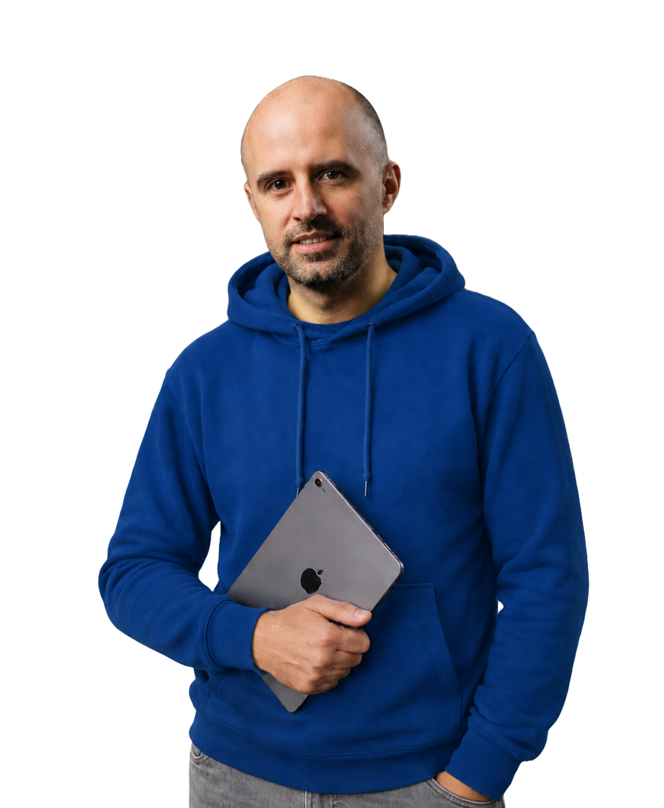
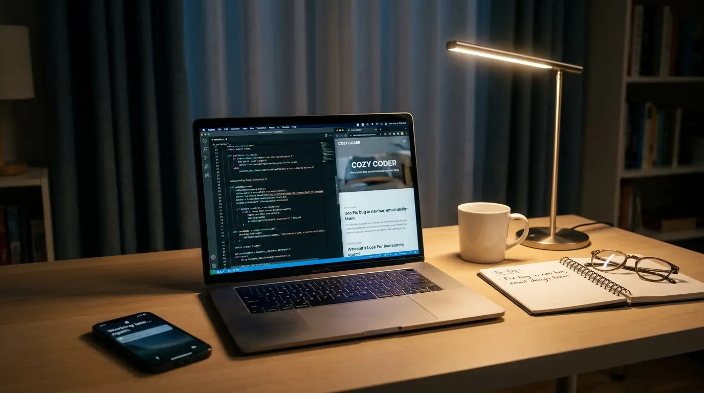
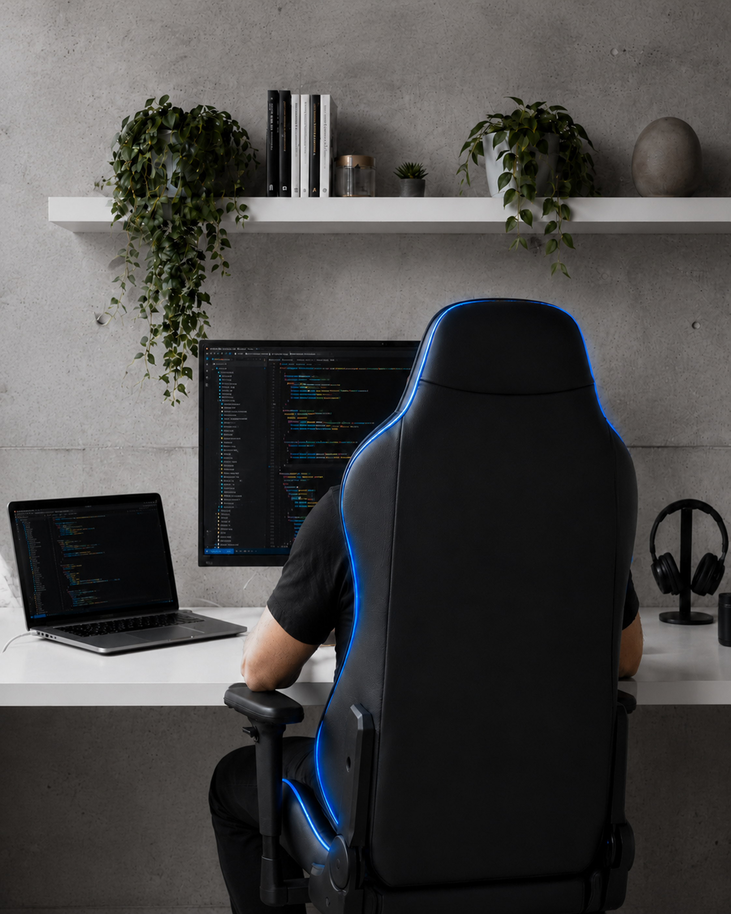

Nieustanna chęć rozwoju
Śledzę nowe technologie i trendy w projektowaniu stron. Podpowiem Ci rozwiązania, dzięki którym Twoja witryna będzie nowoczesna i spójna z marką.
Pomagam lokalnym firmom zaistnieć w sieci - tworzę strony, które przyciągają klientów. Bez stresu, w ustalonym terminie i z dbałością o każdy detal.

Moją misją jest pomóc lokalnym firmom zaistnieć w internecie. Tworzę strony, które nie tylko dobrze wyglądają, ale realnie przyciągają klientów — łącząc czytelny design ze sprawną technologią. Bez agencji, bez pośredników.

Kilka zasad, na których naprawdę mi zależy — i które realnie widać w gotowej stronie.
Śledzę nowe technologie i trendy w projektowaniu stron. Podpowiem Ci rozwiązania, dzięki którym Twoja witryna będzie nowoczesna i spójna z marką.
Zadaję pytania, żeby dobrze poznać Twoje potrzeby. Cenię otwartą komunikację i na każdym etapie chętnie przyjmuję Twoje sugestie oraz feedback.
Nie pracuję w pośpiechu. Planuję projekt tak, aby poświęcić Ci maksimum uwagi i zadbać o każdy, nawet najmniejszy detal na Twojej stronie.
Każdy element jest dopracowany — strona nie tylko dobrze wygląda, ale jest też łatwa w obsłudze i przykuwa uwagę Twoich odbiorców.
Realizuję projekt w ustalonym terminie i na bieżąco informuję Cię o postępach prac, żebyś zawsze wiedział, na jakim etapie jesteśmy.
Jestem dostępny również po zakończeniu projektu — oferuję opiekę nad stroną i pomoc zawsze, gdy tylko jej potrzebujesz.
Chętnie podejmuję się nawet nietypowych i wymagających projektów — im ciekawsze zadanie, tym większa motywacja do działania.
Uwielbiam tworzyć unikalne projekty, które oddają charakter Twojej marki i wyróżniają Cię na tle konkurencji.
Wykorzystuję sprawdzone narzędzia i automatyzację, dzięki czemu więcej czasu poświęcam na to, co naprawdę ważne dla Twojej strony.
